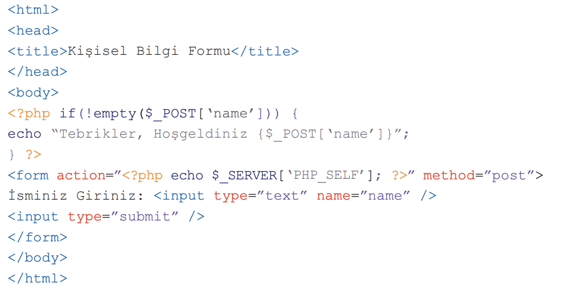

Soru 30:

Yukarıdaki kod parçacığında isim alanına yazılan bilgiler hangi form eylemi aracılığı ile sayfaya geri gönderilir?
A) $_POST[‘name’]
B) input type=”text” name=”name”
C) method=”post”
D) type=”submit”
E) $_SERVER[‘PHP_SELF’]
kodlar bir form oluşturur ve bu formu işler. Kullanıcı formu gönderdiğinde, isim alanına yazılan bilgiler $_SERVER[‘PHP_SELF’] form eylemi aracılığıyla bu sayfaya geri gönderilir. PHP kodu bir isim alanını test eder ve bulursa bir karşılama mesajı görüntüler. PHP programları, form değerlerine öncelikle $_POST ve $_GET dizi değişkenleri aracılığıyla erişir.
Ek bilgi:
$_POST ve $_GET, PHP'de web form verilerini almak için kullanılan iki önemli süper küresel değişkendir.
Veri Gönderme Yöntemi:
$_POST: Web formundan veri gönderirken, method="post" kullanılarak gönderilen verileri alır.
$_GET: Web formundan veri gönderirken, method="get" kullanılarak gönderilen verileri alır. Ayrıca, verileri URL parametreleri olarak göndermek için de kullanılır.
Veri Güvenliği:
$_POST: Form verileri, HTTP isteğinin gövdesine eklenir ve URL'de görünmez. Bu nedenle, $_POST ile gönderilen veriler, URL üzerinden görünmeyerek daha güvenli bir şekilde gönderilir.
$_GET: Form verileri URL parametreleri olarak gönderilir ve URL'de açıkça görünür. Bu nedenle, $_GET ile gönderilen veriler, URL üzerinden açıkça göründüğü için güvenlik açısından daha riskli olabilir.
Veri Boyutu:
$_POST: Form verileri, HTTP isteğinin gövdesine eklenir ve bu nedenle veri boyutu daha büyük olabilir. Bu nedenle, genellikle büyük veri setleri göndermek için $_POST tercih edilir.
$_GET: URL parametreleri olarak gönderilen veriler, URL sınırlamalarına tabidir ve bu nedenle veri boyutu sınırlıdır. Bu nedenle, genellikle daha küçük veri setleri için tercih edilir.
Veri Erişimi:
$_POST: Verilere $_POST ile erişmek için $_POST['veri_adı'] şeklinde kullanılır.
$_GET: Verilere $_GET ile erişmek için $_GET['veri_adı'] şeklinde kullanılır.